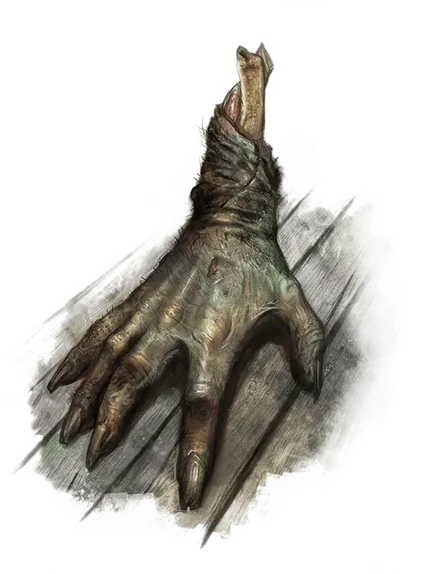

Ползающая рука
Crawling Claw
Крошечная Нежить, нейтрально-злая

Класс Доспеха 12
Хиты 2 (1к4)
Скорость 20 футов, лазая 20 футов
| мод | спас | ||
|---|---|---|---|
| СИЛ | 13 | +1 | +1 |
| ЛОВ | 14 | +2 | +2 |
| ТЕЛ | 11 | +0 | +0 |
| мод | спас | ||
|---|---|---|---|
| ИНТ | 5 | −3 | −3 |
| МДР | 10 | +0 | +0 |
| ХАР | 4 | −3 | −3 |
Иммунитет к урону яд
Иммунитет к состояниям очарование, истощение, отравление
Чувства слепое зрение 30 футов (слеп за пределами этого радиуса), пассивное Восприятие 10
Языки Общий
Опасность 0
Бонус мастерства +2
Особенности
Языки. понимает Общий, но не говорит.
Иммунитет к изгнанию. Рука обладает иммунитетом к эффектам, изгоняющим нежить.
Действия
Коготь. Рукопашная атака оружием: +3 к попаданию, досягаемость 5 футов, одна цель. Попадание: Дробящий или рубящий (на выбор руки) урон 3 (1к4 + 1).
Описание
Ползающие руки — это отрубленные руки убийц, оживленные темной магией, чтоб они могли продолжать убийства. Волшебники и колдуны с темными наклонностями используют ползающие руки в качестве помощников в своем деле.
Магическое происхождение. Путем темных ритуалов некромантии, жизненная сила убийцы связывается с его отрубленной рукой, оживляя её. Если дух убийцы уже существует как другая нежить, если убийца был по-настоящему оживлен, или если его душа уже отошла в другой план, ритуал не удается.
Ритуал создания ползающей руки проходит лучше, если рука была отрублена от убийцы совсем недавно. Чтобы заполучить подходящие руки, проводящие ритуалы и их слуги посещают публичные казни или заключают сделки с наемными убийцами и палачами.
Контроль создателя. Ползающую руку нельзя изгнать или контролировать заклинанием, действующим на нежить. Эти отвратительные монстры полностью подчиняются воле своего создателя, которому необходимо лишь сконцентрироваться на руке, чтобы мысленно управлять каждым её действием. Если хозяин ползающей руки не даёт ей задание, рука продолжает изо всех сил следовать последней полученной команде.
Задачи для ползающей руки должны быть предельно просты. Руке нельзя приказать найти и убить кого-то конкретного — из-за её ограниченных чувств и интеллекта она не сможет выследить и выбрать определенную личность. Однако команда убить всех существ в определенном месте сработает. Ползающая рука с легкостью нащупывает ключи и дверные ручки, и прокрадываются из комнаты в комнату в слепой череде убийств.
Злой разум. Ползающая рука содержит мало воспоминаний и мыслей того, чей частью она раньше была. Однако ненависть, зависть или жадность, что привела человека к убийству, остается, и даже усиливается. Оставленная на свое усмотрение ползающая рука повторяет акты убийства, совершенные ей при жизни.
Живые руки. Если ползающая рука была сделана из отрубленной руки ещё живого убийцы, ритуал связывает её с душой убийцы. Отрубленная кисть может вернуться к своему бывшему владельцу, и её неживая плоть соединится с живой рукой, от которой была отрезана.
Ставший вновь целым, убийца живет так, словно рука никогда не была отрублена, и ритуал никогда не проводился. Когда ползающая рука отделяется вновь, тело впадает в кому. Уничтожение ползающей руки, пока она отделена от тела, убивает носителя. Однако лишение жизни убийцы никак не влияет на ползающую руку.
Природа нежити. Ползающая рука не нуждается в воздухе, еде, питье и сне.